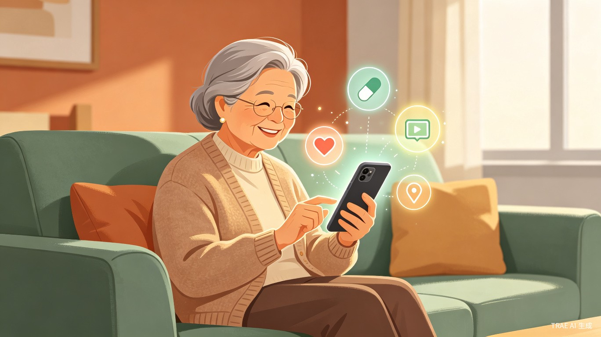
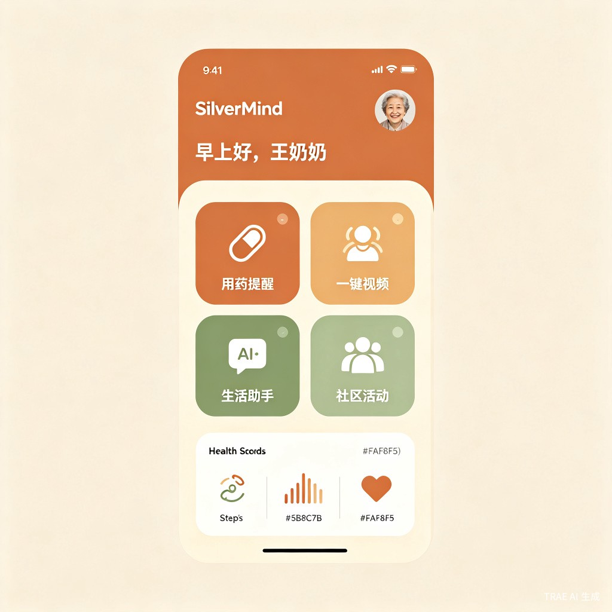
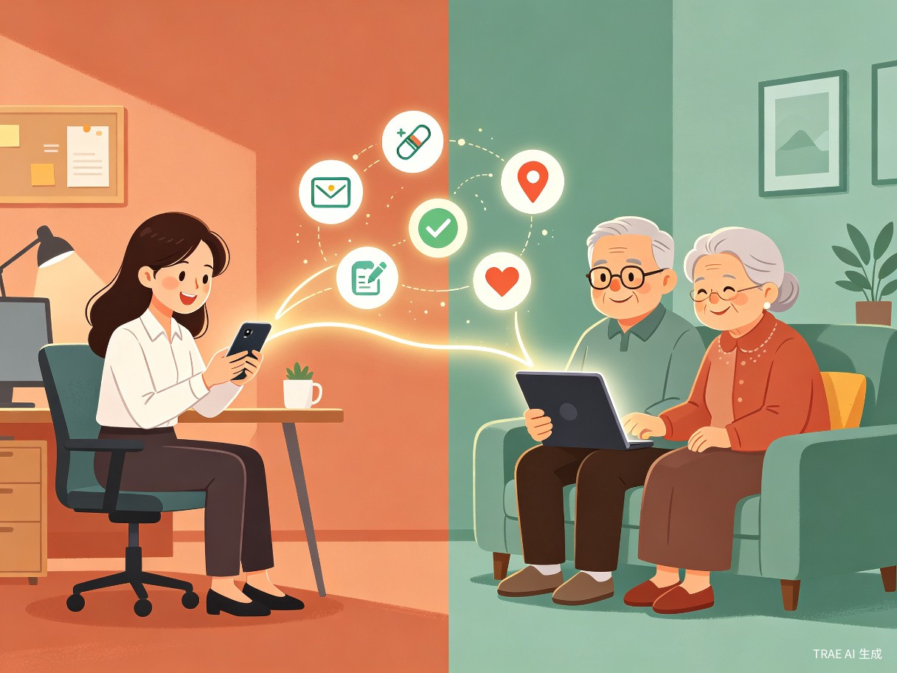

01 创意介绍 Creative Introduction
从真实生活场景出发，用 AI 重新定义"养老"的温度。
想解决什么问题
中国 60 岁以上人口已超 2.97 亿，但大量长者在就医挂号、线上缴费、用药管理等日常场景中面临严重的数字鸿沟，同时独居老人的安全监护和情感陪伴也成为家庭的核心焦虑。
为什么会想到做这个
灵感来自真实的生活痛点：团队一位成员的外婆因不会操作智能手机，连续三个月漏服降压药导致住院；而远在外地的子女直到事发才知情。我们意识到，技术不应该把老年人抛在身后——与其教老人适应复杂的 App，不如让 AI 主动去适应老人。
大概是什么产品
银发智伴 SilverMind 是一款面向 60+ 长者及其家庭的 AI 驱动智慧养老平台，产品形态为 App + 微信小程序 + 智能语音硬件三端联动，以语音交互为核心入口，提供用药提醒、健康监测、生活代办、一键视频和社区服务匹配等一站式服务。

语音优先交互
老人只需"说话"即可完成操作，无需打字、无需学习复杂界面。
健康主动守护
用药提醒、体征监测、跌倒检测，异常情况自动通知家属。
家庭远程关爱
子女端实时查看父母状态，一键视频，位置共享，安心无忧。
社区服务直达
匹配周边助餐、助医、助行服务，一键预约社区志愿者上门。
02 目标用户及痛点 Users & Pain Points
谁会用、何时用、不用会怎样——三层拆解核心用户价值。
面向哪些用户
60+ 银发长者
尤其是独居/空巢老人、慢性病患者、数字技能薄弱的老年人群体。他们有强烈的健康管理和生活便利需求，但受限于技术能力无法独立使用现有数字工具。
30-50 岁子女家庭
工作繁忙、异地打拼、无法时刻陪伴父母的成年子女。他们愿意为父母的安心付费，需要一个可靠的远程关怀与监护工具。
在什么场景下使用
日常用药管理
每天早中晚，语音提醒服药，记录服药情况，漏服自动通知子女。
就医挂号代办
老人说"我要看心脏科"，AI 自动查询附近医院、预约挂号、导航路线。
生活缴费求助
水电燃气、手机充值，老人一句话指令，AI 代为操作完成支付。
紧急安全求助
跌倒检测、长时间无活动报警、SOS 一键呼叫，第一时间通知家属和社区。
当前痛点
-
1
数字鸿沟难以逾越
现有 App 界面复杂、字体小、操作步骤多，老人"想用但不会用"，被排除在数字生活之外。
-
2
用药安全无人监督
慢性病老人每天需服多种药物，漏服、错服、重复服药风险高，子女无法实时监督。
-
3
独居安全缺乏保障
独居老人跌倒、突发疾病时无法及时求助，"摔倒后无人知"的悲剧时有发生。
-
4
情感孤独无人回应
子女工作繁忙难以常伴左右，老人长期缺乏交流，孤独感和抑郁风险显著上升。

03 价值与意义 Value & Impact
从社会价值与商业价值双重视角，论证创意的可行性与影响力。
市场机遇
价值分析
| 价值维度 | 具体体现 |
|---|---|
| 社会价值 | 弥合数字鸿沟：让 2.97 亿长者平等享受数字红利，不再被技术边缘化。守护独居安全：通过 AI 主动监测和预警，降低独居老人意外风险，减轻社会养老负担。促进代际和谐：搭建亲子沟通桥梁，缓解"子欲养而亲不待"的现代困境。 |
| 商业价值 | 银发蓝海市场：中国银发经济预计 2035 年达 12 万亿元规模，智慧养老是核心增长赛道。双端付费模式：长者端免费引流 + 子女端订阅付费（健康监护高级版 29 元/月）+ 社区服务佣金分成，盈利路径清晰。硬件生态延伸：智能语音伴侣硬件、健康监测设备等衍生产品打开第二增长曲线。 |
| 效率提升 | 家庭照护效率：子女从"被动焦虑"转为"主动掌控"，远程即可了解父母健康状态，减少不必要的奔波。社区服务精准匹配：AI 智能调度社区志愿者和养老资源，将原本人工协调的效率提升 5 倍以上。医疗资源优化：用药管理和健康监测减少因漏服药物导致的急诊就医，降低医疗系统负担。 |
04 产品架构 System Architecture
三端联动 + AI 中枢，构建完整的智慧养老服务闭环。
flowchart TB
subgraph U["用户端"]
A1["长者端 App/小程序
语音交互 · 大字界面"]
A2["子女端 App
远程监护 · 健康仪表盘"]
A3["智能语音硬件
桌面伴侣 · 跌倒检测"]
end
subgraph AI["AI 服务中枢"]
B1["语音识别与合成
方言适配 · 语义理解"]
B2["健康推理引擎
用药安全 · 体征分析"]
B3["生活代办代理
挂号 · 缴费 · 购物"]
B4["安全预警系统
跌倒 · 异常 · SOS"]
end
subgraph D["数据与生态"]
C1["健康数据平台
电子病历 · 体征记录"]
C2["社区服务网络
助餐 · 助医 · 志愿者"]
C3["家庭通信枢纽
视频 · 消息 · 位置"]
end
A1 --> B1
A2 --> B2
A3 --> B4
B1 --> B3
B2 --> C1
B3 --> C2
B4 --> C3
C1 --> A2
C2 --> A1
C3 --> A2
05 发展路线 Roadmap
从 MVP 到生态平台，分四步走稳智慧养老之路。
MVP 上线
用药提醒 + 一键视频 + 语音助手核心功能，小程序端先行
健康闭环
接入可穿戴设备，体征监测 + 跌倒检测 + 异常预警全链路
社区网络
对接社区养老服务中心，服务匹配 + 志愿者调度上线
硬件生态
推出智能语音伴侣硬件，构建"软件+硬件+服务"完整生态
让科技有温度，让养老有尊严
银发智伴不仅是一个产品，更是一座连接两代人情感的桥梁。我们相信，最好的技术不是让人去适应机器，而是让机器去理解人——尤其是那些最需要被理解的长者。